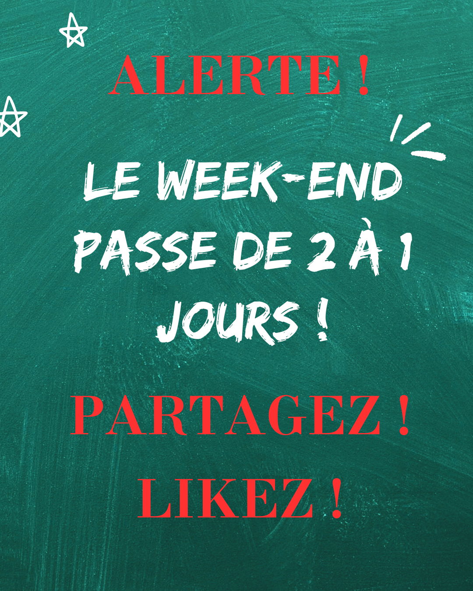

❤️
12 345 likes
labubu_du_67
Le Coin Mobile

Ordinateur Portable 15"
NEUF
Ordinateur Portable 15"
RECONDITIONNÉ1. Quel est le Coût Total de Possession (TCO) réel de notre PC actuel ?
2. Quel est l'âge optimal pour le renouvellement d'un PC ?
3. Comment maîtriser le coût de l'assistance technique ?
4. Où se situe l'impact écologique majeur d'un nouveau PC ?
5. Comment respecter la nouvelle obligation de réemploi (Loi AGEC) ?
6. Quelle est la meilleure approche pour l'achat de nouveaux PC ?
7. Comment gérer l'effacement des données des anciens disques durs ?
8. Comment financer la transition vers des PC plus durables ?
9. Comment éviter le surdimensionnement du matériel ?